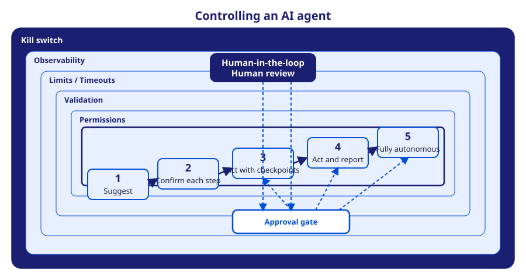

Contrôle des agents IA
Accorder de l'autonomie à un agent IA n'est pas un interrupteur binaire mais un choix gradué, assorti de garde-fous. Cette leçon rassemble le spectre d'autonomie, les points d'approbation, les couches de garde-fous et le Human-in-the-Loop en un seul modèle de contrôle. Tout au long, la plateforme opcp-explorer sert d'environnement sur lequel un agent agit — déployer, démarrer, sauvegarder et gérer des applications via ses interfaces API, CLI et MCP.
Objectifs pédagogiques
- Situer une tâche sur le spectre d'autonomie et choisir le niveau adapté à son risque
- Placer des points d'approbation aux transitions à fort enjeu
- Combiner les cinq couches de garde-fous pour contenir le périmètre d'action d'un agent
- Concevoir une boucle Human-in-the-Loop effective, avec un coupe-circuit fiable
Le spectre d'autonomie
L'autonomie s'étend sur un spectre, du entièrement supervisé au entièrement autonome. Chaque palier accorde plus de liberté au système et supprime un point de contrôle humain ; chaque palier doit donc se justifier par un risque moindre ou des garde-fous plus solides.
- Suggérer — le système propose ; un humain effectue chaque action.
- Confirmer chaque étape — le système agit, mais un humain approuve avant chaque action.
- Agir avec points de contrôle — le système enchaîne plusieurs étapes, en s'arrêtant à des points définis pour approbation.
- Agir et rendre compte — le système accomplit la tâche de façon autonome puis rend compte ; un humain peut intervenir ou revenir en arrière.
- Entièrement autonome — le système agit sans revue humaine dans le périmètre accordé.

Points d'approbation
Un point d'approbation est une pause explicite dans la boucle de l'agent, où une action ne se poursuit que si un humain (ou une politique automatisée) la valide. Les points d'approbation transforment une autonomie « agir avec points de contrôle » en contrôle concret : l'agent avance librement sur les étapes à faible risque et s'arrête aux transitions à fort enjeu.
- Où les placer — aux frontières irréversibles ou coûteuses : mise en production, suppression de données, dépense, modification d'accès.
- Ce qu'ils présentent — l'action proposée, sa justification et son impact estimé, pour qu'un relecteur décide vite et en connaissance de cause.
- Comment ils échouent proprement — un refus ou un délai dépassé doit arrêter l'agent sans laisser d'état partiel dangereux.
Sur opcp-explorer, un agent peut déployer en préproduction automatiquement, puis s'arrêter à un point d'approbation avant la mise en production.
Les couches de garde-fous
Les garde-fous contiennent ce qu'un agent peut faire, indépendamment de son niveau d'autonomie. Ils se superposent en cinq couches, de la plus interne à la frontière extérieure :
- Permissions — l'agent n'accède qu'aux ressources et aux outils strictement nécessaires (moindre privilège).
- Validation — les entrées et les actions proposées sont vérifiées avant exécution (schémas, listes d'autorisation, contrôles de politique).
- Limites et délais — plafonds sur le nombre d'étapes, le budget, le débit et la durée, pour borner les boucles et les dérives.
- Observabilité — journalisation, traçage et alertes rendent le comportement de l'agent visible et auditable.
- Coupe-circuit — un arrêt d'urgence fiable qui stoppe immédiatement l'agent ; c'est la frontière extérieure dure.
Human-in-the-Loop
Le Human-in-the-Loop (HITL) maintient une personne dans la boucle de décision aux moments qui comptent. Ce n'est pas une surveillance permanente : c'est une revue ciblée là où le jugement humain réduit le plus le risque. Une boucle HITL efficace relie la revue humaine aux points d'approbation et au coupe-circuit.
- Revue aux points d'approbation — un humain valide, refuse ou modifie l'action proposée avant qu'elle ne s'exécute.
- Intervention en cours — un opérateur peut mettre en pause, rediriger ou arrêter un agent en cours d'exécution.
- Reprise après incident — après un arrêt, un humain analyse les journaux, corrige et réautorise si besoin.
Le HITL n'est effectif que si le coupe-circuit l'est aussi : la personne doit pouvoir réellement arrêter l'agent, pas seulement protester.
Points clés à retenir
- Le contrôle d'un agent combine quatre leviers : niveau d'autonomie, points d'approbation, garde-fous et Human-in-the-Loop.
- Choisissez la plus faible autonomie qui fait le travail, puis ajoutez des garde-fous à hauteur du risque.
- Placez les points d'approbation aux frontières irréversibles ou coûteuses.
- Les cinq couches de garde-fous sont cumulatives, le coupe-circuit étant la limite extérieure dure.
- Le Human-in-the-Loop n'a de valeur que si l'humain peut réellement arrêter l'agent.